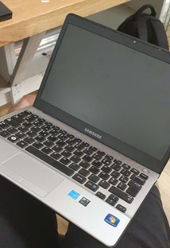
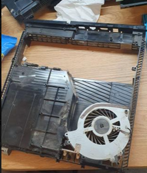

La demande principale pour la boutique est de résoudre les problèmes des appareils électronique des clients. Comme des réparations d’écran de téléphone ou encore des changements de système d’exploitation pour des ordinateurs.
Voici quelques projet qui on été effectuer : 
Changement du système d’exploitation de l’ordinateur d’un client, passer de Windows 10 à Windows 7 car l’ordinateur du client beuguer et ne supporter pas le système d’exploitation, nous avons donc été contraint de remplacer le système d’exploitation par une version antérieur et qui demande moins de ressource à l’ordinateur donc remplacer Windows 10 par Windows 7.
Ici le cas n’était pas très compliqué car il fallait juste trouver le fichier iso Windows 7, le mettre sur une clé Usb puis lancer l’exécutable et tout ce fait tout seul, contrairement à Windows 10 ou là c’est plus compliquer Pour l’installer.

Le but de celle-ci était de nettoyer la console d’un client une ps4 plus précisément, qui avait des problèmes de surchauffe.
Ici le problème de surchauffe venait clairement De la poussière qui c’était accumuler, ce qui Empêchait le ventilateur de remplir parfaitement Sa fonction, puisque toutes les prise d’air étaient Boucher. Le plus compliquer lorsque l’on démonte une Console ou même autre objets électroniques est de ne Pas se perdre dans le démontage, car généralement Il y a beaucoup de vis qui la plupart du temps ne Ne sont pas les même. C’est pour cela que dans ce Genre de chose il faut être très organiser.
Bilan du stage :
Le stage que j’ai effectué au cours de ses 6 dernières semaines a été bénéfique au niveau du contact avec les clients car dans n’importe quel métier il est forcément obligé d’avoir un contact avec le client qu’il soit par téléphone ou virtuel, le stage n’avait pas de réel lien avec la filaire dans laquelle je suis, mais il m’a appris le monde travail savoir comment fonctionne une entreprise et comment on la gère, ce qui est valable pour toutes les entreprises,